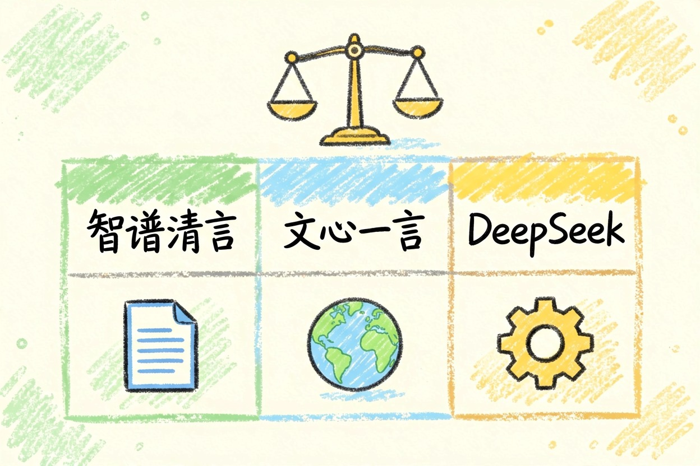

智谱清言好用吗？擅长和不擅长的事一次说清
它擅长读长文档、讲代码，但时效信息与重度生产力别指望，适合谁、不适合谁一次分清。
智谱清言好用吗？先把结论说清
智谱清言好用吗？一句话：长文档理解、代码解释这类要理解力的活，它做得好；最新时效信息和重度生产力场景要谨慎。它不是又一个「国产套壳」，而是有自己的位置。想横向比较，先看国内能直接打开的中文 AI。
三类人适合用，两类人别指望
适合的三类：常读长报告、合同、论文摘要的人；要解释代码、讲清报错逻辑的开发者；写中文书面内容、改正式表达的人。不适合的两类：追最新时效信息的人，别指望它抢新闻；要做批量、稳定的重度生产力的人，也别把身家压在一处。判断自己属于哪边，比记住参数更重要。
擅长的事：长文档、代码解释、中文书面表达
长文档理解是它的长项，丢一份几十页材料，能抓主干、分章节给结论。改合同条款、提炼会议纪要是常见用法，试一次就知道顺不顺手。代码阅读与解释同样顺手，报错信息、陌生仓库都能讲明白。中文书面表达偏正式，适合邮件、方案、通知这类文本。拿这段提示词试一轮，30 秒就能判断理解力：
角色：资深分析师
任务：总结下面这份材料的核心结论
要求：分三点输出，每点不超过 80 字
并标出你觉得不确定的数据
素材：（粘贴长文档或代码）不擅长的事：时效、多模态和稳定性

训练数据有滞后，最新热点、刚发布的政策别指望它。复杂多模态，比如长视频理解、精细图片编辑，也不是它的主场。重度生产力场景的稳定性要看运气，高峰时段偶有降速与限额，客服又难找。竞品从不写这些，却是你日常最常撞上的墙。遇到这类需求，直接换对口工具更省时间。
免费额度、付费边界和国产竞品怎么分工
免费额度官方经常调，别信死数字。体感信号更靠谱：短问答能一直聊，长文档、高频使用会悄悄变慢、自动降档，这就是快撞墙了。付费值不值，取决于你每周有没有稳定的大任务。和文心一言、DeepSeek 怎么分工，看这张表：
| 需求 | 优先考虑 |
|---|---|
| 长文档理解、代码解释 | 智谱清言 |
| 中文写作、百度生态联动 | 文心一言 |
| 复杂推理、代码生成 | DeepSeek |
表格里没覆盖的，就看你最常干的三件事落在哪一行。细看两边，读DeepSeek 和 ChatGPT 怎么选和豆包和 Kimi 的分工。30 秒自测法就三步：
- 拿一段长文档让它总结。
- 再让它解释一段代码。
- 最后问一个时效问题。
输出又快又贴题，留下；吞吞吐吐、答非所问，换别家。免费额度和定价以官网当前说明为准，入口在智谱 AI 官网和智谱开放平台，产品页看智谱清言。别急着为「怕不够用」提前付费，等真卡住了再决定。它补一句「我不确定」，比硬给一个漂亮答案更可信。更大盘面见2026 国产大模型格局。智谱清言好用吗，试一轮长文档比任何榜单都诚实。
本文信息核对于 2026-08-06。AI 产品的价格、免费额度与功能变动频繁，实际以各工具官网当前说明为准。